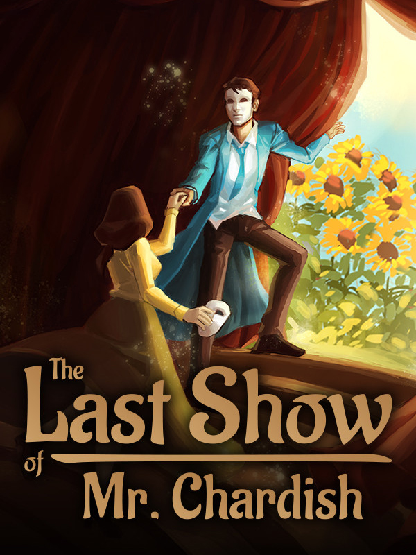

The Last Show of Mr. Chardish
The Last Show of Mr. Chardish
Details
|  | |
| Playtime | Not Played |
| Last Activity | Never |
| Added | 4/17/2025 14:05:12 |
| Modified | 7/2/2025 8:44:03 |
| Completion Status | Not Played |
| Library | Epic |
| Source | Epic |
| Platform | Epic Games |
| Release Date | 11/5/2020 |
| Community Score | |
| Critic Score | 85 |
| User Score | |
| Genre | Action Adventure Casual Indie |
| Developer | Punk Notion |
| Publisher | Anshar Publishing Hydra Games |
| Feature | Single-Player |
| Links | Steam GOG Epic Official Twitch YouTube |
| Tag | [GGDeals] Synced |
Description

"The Last Show of Mr. Chardish" is a journey through the variety of worlds created by the ingenious mind of the successful Director, Robert Chardish. Take the role of Ella, the Actress and through exploring an old theatre try to unveil secrets hidden in the extraordinary, magical plays created in the imagination of Mr. Chardish.

When they were young, the Actress and the Director were full of dreams and ambitions. Decades later, the Actress returns to the theatre, to once more become the performer, the audience and the muse.
The performances, the letters and the radio interviews - they are all meaningful, but will the Actress find what she's looking for? Attend the last show of a famous artist reflecting on his defining moments and your role in his life.

With each play you will explore a new, incredible scenography, fully painted in VR. Each performance tells the story of different characters, with individual gameplay mechanics and a unique closure. Be a robot escaping a factory or a little, boastful musketeer - every role you take is a medium for emotional experiences of the Director.

To separate the performances from the real world and put the stress on their artistic nature, we decided to reach for new, creative methods of graphic design. The plays’ segments of the game are painted using virtual reality technology. Exchanging traditional 3D modeling for painterly strokes and splatters granted us more expressive freedom in shaping the artistic vision of the Director.
In The Last Show of Mr. Chardish you will experience:
- A rich, engaging story about the relationship of two artists, who founded a theatre in a British countryside.
- Multiple chapters with different gameplay mechanics, telling individual stories tied to the main plot.
- A unique art style created with VR painting technology.